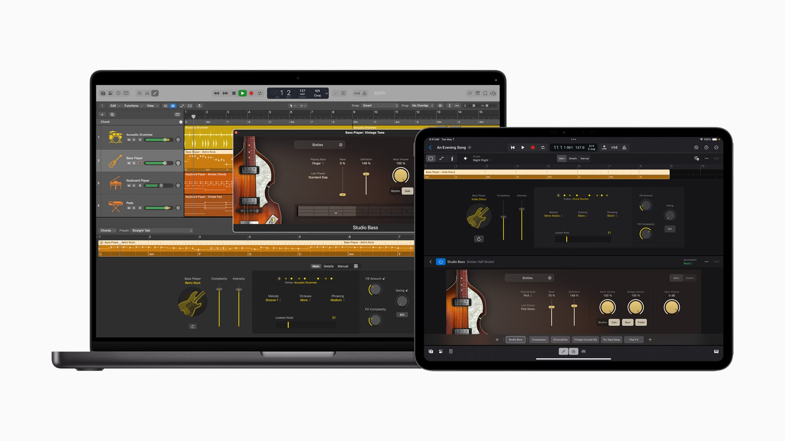

请访问原文链接：Apple Logic Pro 11.1 - 专业音乐制作 (音频编辑) 查看最新版。原创作品，转载请保留出处。
作者主页：sysin.org
Logic Pro 配备全新 AI 功能，引领音乐创作再上新阶
伴奏乐手、大分轨拆分器和 ChromaGlow 让 iPad 版和 Mac 版 Logic Pro 比以往更智能

16 英寸 MacBook Pro 和 13 英寸 iPad Pro 屏幕均显示 Logic Pro。
全新 iPad 和 Mac 版 Logic Pro 带来突破性的音乐创作体验。
加利福尼亚州，库比提诺 Apple 今日发布全新 iPad 版 Logic Pro 2 和 Mac 版 Logic Pro 11，为作曲、节拍制作、音乐创作以及混音带来突破性的专业体验。全新 Logic Pro 由人工智能驱动 (sysin)，带来种种精彩的录音室助理功能，旨在优化音乐创作流程，不仅能随时为音乐人提供所需协助，还确保他们在创作上全面掌控。这些功能包括：伴奏乐手，扩展了 Logic Pro 中鼓手的热门功能，纳入新的贝司手和键盘手；大分轨拆分器，能够提取和处理单音频录音的单个声部；以及 ChromaGlow，可即时为音轨添加色彩。iPad 版 Logic Pro 2 和 Mac 版 Logic Pro 11 将自 5 月 13 日 (星期一) 起于 App Store 提供。
“Logic Pro 为创意人士提供作曲、制作和混音所需的种种功能，助他们打造优秀的音乐作品，而我们的各项最新功能，更可将创意提升到新的层次，”Apple 专业 app 全球产品营销高级总监 Brent Chiu-Watson 表示。“Logic Pro 迎来多项基于 AI 的全新更新，与 iPad、Mac 和 M 系列 Apple 芯片的巅峰性能表现相得益彰，让创意高手尽享业内一流的音乐创作体验。”
Logic Pro
本领先声夺人，
创意一鸣惊人。

-
使用实时循环乐段，以全新方式进行音乐创作和即兴演奏。
-
借助采样器和快速采样器将声音转化为乐器 (sysin)。
-
通过步进音序器来快速制作鼓点节拍和旋律模式。
-
利用 Logic Remote 在 iPad 或 iPhone 上掌控乐曲的创作。
Logic Pro MainStage 插件和音效
MainStage 3
舞台音效，媲美录音室效果。
现在，将你的 Mac 变身现场演出装备。凭借不计其数的各种插件和音效选择，你可以让键盘、吉他或演唱表现令观众耳目一新，难以忘怀。
更新记录
11.1，2024年11月13日
Quantec Room Simulator
- 访问唯一以插件形式重现的真实硬件，该插件使用 Quantec 创始人兼发明者 Wolfgang Buchleitner 的原始原理图、算法和代码而构建。
- 添加 Quantec QRS 和 Quantec Yardstick 硬件混响的传奇声音，二者可打造精准声学还原的空间模拟。
- 选择古典 Quantec QRS 为音乐添加自然的声学空间并保留其音色特征。
- 选取使用增强型空间模拟算法的 Quantec Yardstick，实现清晰度与细节皆有提升的更精准声学空间建模。
插件搜索
- 直接从插件菜单查找并添加任意插件。
- 使用“搜索并添加插件”键盘命令快速查找并添加插件，无需点按通道条插入。
- 按类别、公司名称甚至是插件名称的一部分来轻松进行搜索。
改进
- 拖移通道条来整理混音器布局。
- 直接将混音发送到“语音备忘录”并在 iPhone、iPad 或 Apple Watch 上试听。
- 按住 Command 键点按任意插件插槽以快速移除插件。
- 通过菜单内搜索快速设定输入、输出、侧链源或总线路由。
- 使用键盘命令朝任意方向移动选取框选择范围以加速编辑。
声音资源库
- 下载新的“模块化旋律”声音包并探索上百个由可 Patch 化硬件合成器打造的乐段以及一系列精心设计的 Alchemy 合成器 Patch。
11.0, 2024 年 5 月 13 日
人工智能增强型工具
智能速度和音高修正插件中加入新的人工智能增强型工具，可进一步提升你的艺术技巧
- 鼓手迎来贝司手和键盘手的加入，组成了完整的伴奏乐手阵容。所有乐手均通过人工智能构建，可在你的指挥下轻松创建演奏
- 伴奏乐手可使用全局和弦轨道跟随同一和弦进行
- 通过 ChromaGlow 为任意轨道增添温暖感，这款高级插件包含五个饱和度模型，用于重现老式模拟硬件的声音*
- 通过大分轨拆分器将立体声音频文件分离成人声、鼓、贝司及其他声部的大分轨*
- iPad 版 Logic Pro 2 也加入了伴奏乐手、ChromaGlow 和大分轨拆分器，可轻松兼容在 Mac 版 Logic Pro 中创建的项目
声音资源库
- 录音室贝司包含六款深度采样的原声贝司和电贝司可供弹奏
- 录音室钢琴包含三款精细采样的钢琴可供演奏
- 包含和弦标记的乐段在添加到项目时会自动填充和弦轨道
- 三个全新制作人包可供使用：Hardwell、The Kount 和 Cory Wong
- Ellie Dixon 的原创多轨道项目“Swing!”以 App 内演示乐曲的形式提供
空间音频
- 降低混音和修剪选项允许对非全景声通道配置进行自定义混音
- 导出的 ADM BWF 文件可包含立体声及其他多通道格式的设置，兼容性优于杜比全景声
改进
- 原位并轨为外部乐器片段或通过 Logic 的 I/O 插件使用外部硬件的轨道增加了自动实时录音功能
- 支持的软件乐器和效果所生成的 MIDI 可发送至其他轨道的输入，以便在播放或录音期间进行创意性叠加
- 使用键盘命令更高效地进行编辑，包括移动、扩展选取框所选内容或调整其大小
* 需要 Apple M1 或后续芯片
10.8，2023 年 11 月 6 日
- 通过 Mastering Assistant 及其易用的专业声音修正工具面板交付可供发布的混音
- 使用 Sample Alchemy 将任意音频采样变换成可以塑形和演奏的声音
- 通过新的精细时间和音高变形插件 Beat Breaker 彻底重塑和重组音频。
- 新的滑移和旋转工具可移动片段中的内容，而不影响其时间线位置
- 使用支持的音频设备时，现可录制 32 位浮点音频
- 免费的 “Hybrid Textures” Sample Alchemy 声音包包含 70 个 Patch 和 80 多个乐段的合集，均通过将身边的自然声音变为创造性的可弹奏乐器而构建
10.7.5，2022 年 11 月 1 日
- Track Stack 允许额外的一个层次，提高了项目内的灵活性和整洁性
- 全新增益工具可快速轻松调整片段的分贝级
- 现可录制 MIDI 插件，以允许对生成的音符和控制器数据进行精确编辑
- 全新 “自由录音” 走带按钮可轻松启用无节拍器录音，以允许任何新内容跟随演奏的自然节奏
- 通过新增的基于机器学习的系统，音频文件和录音的智能速度分析得到大幅改进
- Pedalboard 中的 35 个 Stompboxes 分别作为单独的插件提供
- Logic 可使用通过 iOS 16 创建的 “个性化空间音频” 描述文件
- 支持 32 位浮点格式音频文件，无需转换即可播放
- 支持 Ableton Link，以允许 Logic 与支持的软件和硬件同步播放
10.7，2021 年 10 月 18 日
创建空间音频混音，欣赏数以千计全新的免版税声音 (sysin)，以及在新 MacBook Pro 上体验工作站级别的性能。
空间音频创作
- 将您的音乐转换为空间音频混音，并创建兼容 Apple Music 的杜比全景声文件
- 使用增强的混音器，支持对最高 7.1.4 的扬声器布局进行测量和声相调整
- 使用全新 3D 对象声相器将声音放置到沉浸式声场中
- 使用集成的 Dolby Atmos 插件来可视化混音中的 3D 对象，以及在适用于独立扬声器的多通道模式或适用于耳机的双声道立体声模式下进行监听
- 使用经扩展以支持 7.1.4 通道的 13 个插件，包括 Space Designer、Limiter、Tremolo、Flanger 和 Phaser
更多内容
- 8 个内含免版税声音的制作人包，均出自当代最顶尖的热单制作人之手，包括 Boys Noize、Mark Lettieri、Mark Ronson、Oak Felder、Soulection、Take A Daytrip、Tom Misch 和 TRAKGIRL
- 包含击弦浩室、现代氛围以及一系列 808 架子鼓、贝司样本和乐段的声音包
- 新增共 2800 个乐段、50 个架子鼓和 120 个 Patch
- 来自 Lil Nas X 的热门歌曲《MONTERO》的原始多轨道项目，包括杜比全景声空间音频混音
其他功能
- 优化的全新设计
- 扩展的步进音序器工具，可启用实时步进录音和旋律鼓样式编辑等
10.6
- 提高了在搭载 Apple 芯片的 Mac 电脑上的性能和效率
- 新增使用 iPad 或 iPhone 上的 Logic Remote 控制步进音序器的功能，可创建节拍、低音线和旋律部分
- 支持所有 Novation Launchpad 控制器
- 稳定性和性能提升
下载地址
App Store：https://apps.apple.com/app/logic-pro-x/id634148309
-
Logic Pro X 10.3，系统要求 OS X 10.11 或更新版本
百度网盘链接：[EoD] -
Logic Pro X 10.4，系统要求 macOS 10.12 或更新版本
百度网盘链接：[EoD] -
Logic Pro X 10.5，系统要求 macOS 10.14.6 或更新版本
百度网盘链接：[EoD] -
Logic Pro 10.6 Universal + MainStage 3.5 Universal，系统要求 macOS 10.15.7 或更新版本
百度网盘链接：[EoD] -
Logic Pro 10.7 Universal，系统要求 macOS 11.0 或更新版本
MainStage 3.6 Universal，系统要求 macOS 11.5 或更新版本
百度网盘链接：[EoD] -
Logic Pro 10.7.5 Universal，系统要求 macOS 12.3 或更高版本
MainStage 3.6.2 Universal，系统要求 macOS 12.3 或更高版本
百度网盘链接：[EoD] -
Logic Pro 10.8 Universal，系统要求 macOS 13.5 或更高版本
MainStage 3.6.5 Universal，系统要求 macOS 13.5 或更高版本
百度网盘链接：[EoD] -
Logic Pro 10.8.1 Universal，系统要求 macOS 13.5 或更高版本
MainStage 3.6.6 Universal，系统要求 macOS 13.5 或更高版本
百度网盘链接：[EoD] -
Logic Pro 11.0.0 Universal，系统要求 macOS 13.5 或更高版本
百度网盘链接：[EoD] -
Logic Pro 11.1.0 Universal，系统要求 macOS 14.4 或更高版本
百度网盘链接：https://pan.baidu.com/s/1FXg6Se0tnXdd2KPSPRK9OA?pwd=yrud

文章用于推荐和分享优秀的软件产品及其相关技术，所有软件默认提供官方原版（免费版或试用版），免费分享。对于部分产品笔者加入了自己的理解和分析，方便学习和研究使用。任何内容若侵犯了您的版权，请联系作者删除。如果您喜欢这篇文章或者觉得它对您有所帮助，或者发现有不当之处，欢迎您发表评论，也欢迎您分享这个网站，或者赞赏一下作者，谢谢！
 支付宝赞赏
支付宝赞赏
 微信赞赏
微信赞赏
赞赏一下